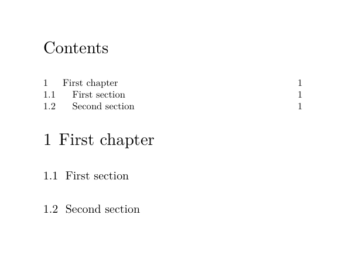
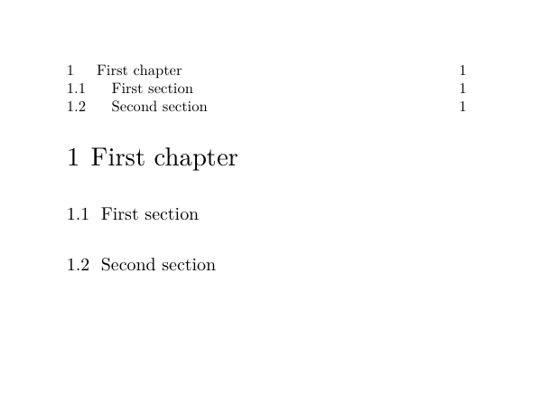
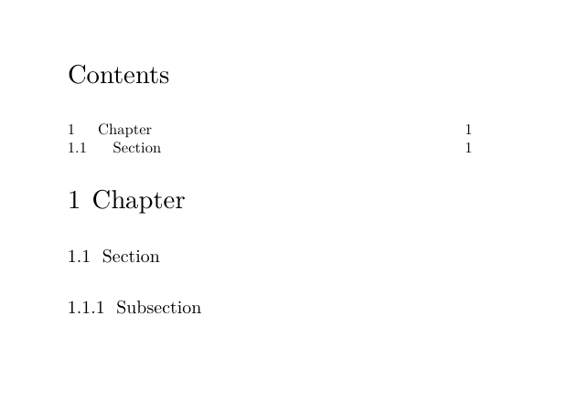
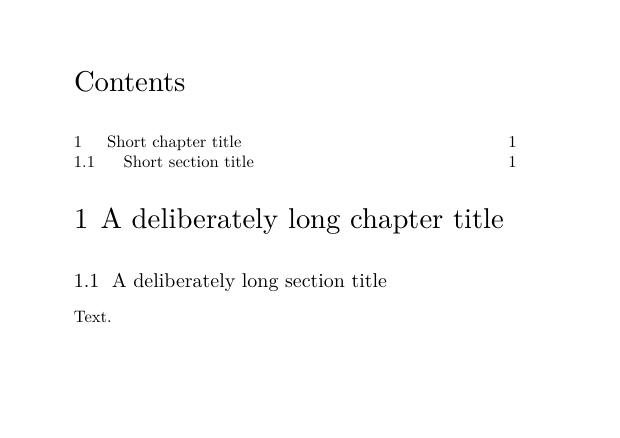
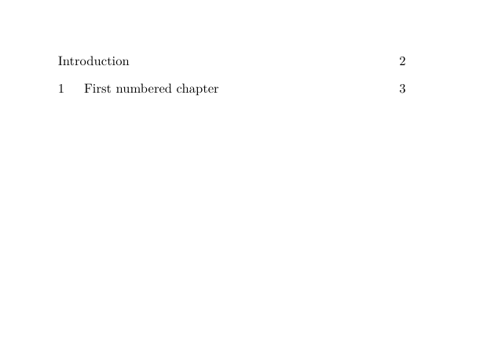

| TODO: This page is under construction as part of the renewal of the "Document structure and headlines" documentation area. Feel free to improve, correct, or extend it where useful. (See: To-Do List) |
HOW-TO — Configuring a table of contents
This page explains how to create, select, and format a table of contents in current ConTeXt LMTX.
It concentrates on the standard combined list content, used by
\placecontent and \completecontent.
For specialised layouts, custom renderers, nested lists, and other advanced constructions, see Create specialised tables of contents.
Audit status
The principal mechanisms described on this page have been checked against ConTeXt LMTX 2026.07.29 and a dedicated set of minimal working examples.
Most of the tested mechanisms behave as expected. The validation also identified a small number of historical or implementation-sensitive settings that should not be taught as ordinary current techniques.
In particular, aligntitle did not produce the documented
distinction in the tested case, and the historical
extras=...page recipe did not force a table-of-contents page
break.
The remaining work is therefore mainly editorial: retain the validated everyday mechanisms, move advanced constructions to the appropriate specialised pages, and identify historical syntax clearly.
Contents
- 1 1. What this page does
- 2 2. The working model: structure, selection, and presentation
- 3 3. Create a standard table of contents
-
4
4. Choose what appears in the ToC
- 4.1 4.1. Choose the represented head types with list={...}
- 4.2 4.2. Place several list types directly with \placelist
- 4.3 4.3. Do not redefine the standard content list
- 4.4 4.4. Select all matching entries with criterium=all
- 4.5 4.5. Use criterium=local for context-sensitive standard behaviour
- 4.6 4.6. Select descendants of the current structural item
- 4.7 4.7. Select entries belonging to the current chapter
- 4.8 4.8. Select one section block
- 4.9 4.9. Limit the selected depth with levels=N
-
5
5. Control the text and numbering of ToC entries
- 5.1 5.1. Use a different title in the ToC
- 5.2 5.2. Do not confuse the two uses of list=
- 5.3 5.3. A true unnumbered head is not automatically a standard ToC entry
- 5.4 5.4. An unnumbered chapter in front matter is different
- 5.5 5.5. Include a special unnumbered head without consuming the chapter number
- 5.6 5.6. Hiding a number does not necessarily stop the counter
- 5.7 5.7. Be careful when modifying title globally
- 5.8 5.8. More specialised inclusion and exclusion patterns
-
6
6. Format ToC entries with \setuplist
- 6.1 6.1. Choose the ordinary rendering alternative
- 6.2 6.2. Show or hide structural numbers
- 6.3 6.3. Show or hide page numbers
- 6.4 6.4. Style the complete entry or individual components
- 6.5 6.5. Apply a command to one component
- 6.6 6.6. Control width, distance, and margin
- 6.7 6.7. Align numbers and multi-line titles
- 6.8 6.8. Add space before or after entries
- 6.9 6.9. Replace the complete entry for a specialised design
- 7 7. Control structural-number and page-number representation
- 8 8. Create partial and local tables of contents
- 9 9. Go further: specialised tables of contents
- 10 10. Recognise historical and implementation-sensitive recipes
- 11 11. Quick recipes
- 12 12. Related pages
- 13 13. Attribution and revision history
1. What this page does
A table of contents in ConTeXt is built from structural information stored by the document.
The most common tasks are:
- place the standard table of contents;
- decide whether the table has its own heading;
- choose which structural head types can appear;
- select entries globally or from a particular structural context;
- restrict the selected structural depth;
- use a shorter or otherwise different title in the ToC;
- decide how numbered and unnumbered heads participate;
- format chapter, section, and subsection entries independently.
This page is a HOW-TO guide.
For the underlying model of document structure, see Understanding document structure and section heads.
For section-number formatting itself, see Section numbering.
2. The working model: structure, selection, and presentation
A table of contents is a representation of document structure
The document structure exists independently of the table of contents.
For example:
chapter ├── section │ └── subsection └── section
These structural elements exist whether or not a table of contents is printed.
A table of contents selects information from that structure and presents it as a list:
DOCUMENT STRUCTURE
│
├── chapter
├── section
├── subsection
└── ...
│
▼
SELECTION
│
▼
LIST ENTRIES
│
▼
TABLE OF CONTENTS
Consequently:
- removing a subsection from the table of contents does not remove the
subsection from the document structure;
- changing the appearance of a ToC entry does not change the corresponding
section head;
- changing the text used in a ToC entry does not necessarily change the
title printed in the document.
The table of contents is therefore a selected representation of structural data, not the document structure itself.
For practical work, keep three stages separate:
STRUCTURE SELECTION PRESENTATION
chapter ───────────────┐
section ───────────────┼──► which entries? ───────► number + title + page
subsection ────────────┘ │ │
│ │
\setupcombinedlist \setuplist
criterium=... alternative=...
levels=... style=...
width=...
A single structural item can have several representations: its printed title, structural number, ToC title, PDF bookmark, running marking, and reference target.
Tables of contents normally require more than one ConTeXt run because the list is assembled from structural information saved between runs.
3. Create a standard table of contents
3.1. Use \completecontent when the ToC should have its own heading
The usual command is:
\completecontent
It places the predefined combined list content and adds the
standard Contents heading.
A compact example is:
-
\setuppapersize[A7,landscape] \setupbodyfont[8pt] \setuppagenumbering[state=stop] \setuphead [chapter,section] [page=no] \starttext \completecontent \startchapter[title={First chapter}] \startsection[title={First section}] \stopsection \startsection[title={Second section}] \stopsection \stopchapter \stoptext
-

3.2. Use \placecontent when only the entries are wanted
Use:
\placecontent
when the list entries should be placed without a surrounding Contents head.
For example:
-
\setuppapersize[A7,landscape] \setupbodyfont[8pt] \setuppagenumbering[state=stop] \setuphead [chapter,section] [page=no] \starttext \placecontent \startchapter[title={First chapter}] \startsection[title={First section}] \stopsection \startsection[title={Second section}] \stopsection \stopchapter \stoptext
-

\completecontent and \placecontent use the same combined list
A useful simplified model is:
\placecontent
└── places the combined list "content"
\completecontent
├── creates the Contents head
└── places the combined list "content"
For an ordinary global table of contents, the most obvious visible difference is therefore the heading.
3.3. Change the Contents heading
The heading used by \completecontent comes from the
language-aware head text named content.
To change it for the current main language:
\setupheadtext [content={All my contents}]
An explicit language can also be supplied:
\setupheadtext [en] [content={All my contents}]
This changes the heading of the table of contents. It does not change the titles of the entries inside it.
Do not confuse three different uses of text and list settings
\setupheadtext[content={...}]
→ text of the Contents head
\startchapter[title={...},list={...}]
→ alternate ToC/list title for one structural item
\setupcombinedlist[content][list={chapter,section}]
→ names of the entry types represented by the combined list
4. Choose what appears in the ToC
There are three distinct questions:
list={...}
→ WHAT kinds of entries may appear?
criterium=...
→ FROM WHAT structural context are matching entries selected?
levels=N
→ HOW MANY successive structural depths of that result are retained?
Keeping these questions separate prevents many apparently complicated ToC problems.
4.1. Choose the represented head types with list={...}
The standard content combined list is already defined by
ConTeXt.
To configure it so that only chapters and sections are represented:
\setupcombinedlist [content] [list={chapter,section}]
For example:
-
\setuppapersize[A7,landscape] \setupbodyfont[8pt] \setuppagenumbering[state=stop] \setuphead [chapter,section,subsection] [page=no] \setupcombinedlist [content] [list={chapter,section}] \starttext \completecontent \startchapter[title={Chapter}] \startsection[title={Section}] \startsubsection[title={Subsection}] \stopsubsection \stopsection \stopchapter \stoptext
-

The subsection still belongs to the document structure. It is simply not represented by this particular combined list.
list={...} is a list-name selection, not a numerical depth setting
DOCUMENT STRUCTURE
chapter
section
subsection
COMBINED LIST
list={chapter,section}
REPRESENTED ENTRY TYPES
chapter
section
A custom structural head can also have its own list name. It is therefore more accurate to think in terms of requested list-entry names than simply in terms of numerical depth.
4.2. Place several list types directly with \placelist
For a one-off list, it is not always necessary to change the standard
content list.
For example:
\placelist [chapter,section]
places those list types directly and does not create a Contents heading.
Use a combined list when a reusable named composition is useful; use
\placelist when a direct list is clearer.
4.3. Do not redefine the standard content list
Do not write:
\definecombinedlist [content] [...]
for the standard table of contents.
The content combined list already exists.
Configure it instead:
\setupcombinedlist [content] [list={chapter,section}]
4.4. Select all matching entries with criterium=all
For an explicitly global table of contents:
\completecontent [criterium=all]
or:
\placecontent [criterium=all]
all selects all matching saved list entries.
It does not mean “everything physically above the place where the ToC is printed”.
A table of contents placed in the middle of a document can therefore contain entries occurring later in the source, because ConTeXt uses structural list data saved during an earlier run.
Physical position and list selection are different
criterium=all is global with respect to the matching saved
list data. It is not a request for “everything already typeset”.
4.5. Use criterium=local for context-sensitive standard behaviour
The standard content list uses criterium=local
by default.
In ordinary use, this gives useful context-sensitive behaviour:
- near the beginning of a document, the standard contents list can behave as a global ToC;
- inside a numbered structural context, it can select entries belonging below that context.
For explicit control, however, prefer a criterion that says directly what is intended.
For example:
criterium=all
for a global ToC, or:
criterium=current
for descendants of the current structural item.
4.6. Select descendants of the current structural item
Use:
criterium=current
to select entries structurally below the current item.
Conceptually:
chapter 2 ← current structural item
section 2.1 ✓
section 2.2 ✓
subsection 2.2.1 ✓
chapter 3 ✗
The current item itself is not part of the result.
4.7. Select entries belonging to the current chapter
A named structural level can be used as the criterion.
For example:
\placelist [section] [criterium=chapter]
selects section entries belonging to the current chapter context.
Conceptually:
Chapter 1 Section 1.1 ✓ Section 1.2 ✓ Chapter 2 Section 2.1 ✗
The two parts of the command have different roles:
section → which list-entry name is requested? criterium=chapter → through which structural level must the current path match?
4.8. Select one section block
ConTeXt records section-block membership separately from structural level.
The standard blocks are:
| Section-block name | Document environment |
|---|---|
frontpart |
\startfrontmatter ... \stopfrontmatter
|
bodypart |
\startbodymatter ... \stopbodymatter
|
appendix |
\startappendices ... \stopappendices
|
backpart |
\startbackmatter ... \stopbackmatter
|
To select chapters from one block:
\placelist[chapter][criterium=frontpart:all] \placelist[chapter][criterium=bodypart:all] \placelist[chapter][criterium=appendix:all] \placelist[chapter][criterium=backpart:all]
The syntax can be read as:
section-block : criterion
frontpart:all
│ └── all matching entries
└──────── but only from frontpart
Section blocks are not structural levels
frontpart, bodypart, appendix, and
backpart select regions of the document.
They do not add another part/chapter/section/subsection level to the structural hierarchy.
4.9. Limit the selected depth with levels=N
Use the numeric levels= parameter when only a limited number
of successive structural depths should be kept.
For example:
\placecontent [criterium=all, levels=2]
If the selected result begins with chapters:
chapter ✓ section ✓ subsection ✗ subsubsection ✗
If the selected result begins with sections instead, the same
levels=2 keeps sections and subsections.
Thus levels= describes a relative depth span of the selected
result.
Historical syntax: level=
Older ConTeXt material may contain:
level=subsection
or:
level=current
This belongs to an older list mechanism.
Current LMTX uses numeric levels= here. Do not mechanically
replace an old value such as level=subsection with
levels=subsection: the two settings do not have the same
semantics.
5. Control the text and numbering of ToC entries
Selection decides which structural records participate in the ToC.
A separate question is what text and number representation those records supply to the list.
5.1. Use a different title in the ToC
A structural head can have one title in the printed document and another in lists such as the table of contents.
If list= is omitted, the ordinary title= value
is used.
To provide a different ToC title:
-
\setuppapersize[A7,landscape] \setupbodyfont[8pt] \setuppagenumbering[state=stop] \setuphead [chapter,section] [page=no] \starttext \completecontent \startchapter [title={A deliberately long chapter title}, list={Short chapter title}] \startsection [title={A deliberately long section title}, list={Short section title}] Text. \stopsection \stopchapter \stoptext
-

The printed title and ToC title are two representations of one structural item
structural item ├── title → printed section head ├── list → ToC/list representation ├── bookmark → PDF outline ├── marking → running marking └── reference → cross-reference target
Changing list= does not create another section.
5.2. Do not confuse the two uses of list=
The keyword list occurs in two different command contexts.
For one structural item:
\startchapter [title={Long printed title}, list={Short ToC title}]
it supplies alternate list text for that item.
For the combined list itself:
\setupcombinedlist [content] [list={chapter,section}]
it specifies which list-entry names make up the table of contents.
These two meanings should not be conflated.
5.3. A true unnumbered head is not automatically a standard ToC entry
The predefined unnumbered head families correspond structurally to the ordinary hierarchy:
title ↔ chapter subject ↔ section subsubject ↔ subsection ...
But a title is not simply a chapter whose printed number has
been hidden, and a subject is not simply an unnumbered
section.
For ordinary use, keep these questions separate:
What structural head type is this? Does it increment the structural counter? Is a number displayed? Is it saved as a listable item? Is its list name included in the ToC?
The standard content list does not automatically include
title, subject, and the other true unnumbered
head names.
5.4. An unnumbered chapter in front matter is different
A chapter inside frontmatter remains structurally a
chapter.
Its visible chapter number is suppressed by the section-block setup, but the structural item is still a chapter and can participate normally in the ToC.
For example:
-
\setuppapersize[A7,landscape] \setupbodyfont[8pt] \setuppagenumbering[state=stop] \setuphead[chapter][page=no] \starttext \placecontent \startfrontmatter \startchapter[title={Introduction}] Text. \stopchapter \stopfrontmatter \startbodymatter \startchapter[title={First numbered chapter}] Text. \stopchapter \stopbodymatter \stoptext
-

An unnumbered chapter is not the same as an unnumbered head type
front-matter chapter
structural name = chapter
visible number = suppressed
ToC participation = retained
true title head
structural name = title
ordinary ToC participation = not automatic
5.5. Include a special unnumbered head without consuming the chapter number
Sometimes a genuinely unnumbered special-purpose head should appear in the table of contents without advancing the ordinary chapter counter.
For this case, use incrementnumber=list.
It is usually safer to define a dedicated head rather than modify the
standard title head globally.
For example:
-
\setuppapersize[A7,landscape] \setupbodyfont[8pt] \setuppagenumbering[state=stop] \setuphead [chapter,title] [page=no] \definehead [fronttitle] [title] \setuphead [fronttitle] [incrementnumber=list, number=no, page=no] \setupcombinedlist [content] [list={fronttitle,chapter}] \starttext \completecontent \startfronttitle [title={Preface}] Text. \stopfronttitle \startchapter [title={First chapter}] Text. \stopchapter \stoptext
-

The important distinction is:
| Setting | Increment ordinary structural counter? | Save as listable? |
|---|---|---|
incrementnumber=yes
|
yes | yes |
incrementnumber=no
|
no | no |
incrementnumber=list
|
no | yes |
Thus incrementnumber=list is useful for a special head that
should appear in a list without consuming the next ordinary structural
number.
5.6. Hiding a number does not necessarily stop the counter
Do not confuse:
number=no
with:
incrementnumber=no
For example:
incrementnumber=yes, number=no
hides the printed number but still advances the structural counter.
A visually unnumbered preliminary head configured this way can therefore consume the first chapter number.
5.7. Be careful when modifying title globally
\completecontent itself creates a title head
A global setup such as:
\setuphead [title] [incrementnumber=list, number=no]
affects every structural head of type title, including the
head created by \completecontent.
If title is also included among the list names represented by
content, the Contents head itself can become a ToC entry.
For isolated special-purpose heads, define a dedicated head such as
fronttitle instead.
5.8. More specialised inclusion and exclusion patterns
The cases above cover ordinary ToC work:
- regular numbered chapters and sections;
- chapters whose visible number is suppressed by front matter;
- genuine unnumbered heads;
- special listable heads that must not advance the normal counter.
More specialised inclusion and exclusion patterns belong to:
Include or exclude heads from the ToC.
That page can deal with custom head families, selectively suppressed entries, and manual list inclusion without overloading this introductory HOW-TO.
6. Format ToC entries with \setuplist
Once the required entries have been selected, \setuplist
controls how each list type is represented.
For example:
\setuplist [chapter] [style=bold]
changes the presentation of chapter entries in lists. It does not change the chapter heads in the document itself.
The general form is:
\setuplist [chapter] [settings]
Several list types can receive the same setup:
\setuplist [section,subsection] [settings]
Selection and rendering are separate stages
STRUCTURAL DATA
│
▼
selection
list={...}
criterium=...
levels=...
│
▼
SELECTED LIST ENTRIES
│
▼
rendering
\setuplist[chapter][...]
\setuplist[section][...]
│
▼
PRINTED / INTERACTIVE ToC
A \setuplist setting changes the representation of an entry
that has already been selected. It does not decide whether that structural
item exists in the document or whether it was selected.
6.1. Choose the ordinary rendering alternative
The alternative= parameter selects the basic rendering method
used for an entry.
For an ordinary table of contents, the two most useful alternatives are:
| Alternative | Main result |
|---|---|
b |
number — title — flexible space — page; this is the default |
c |
number — title — dot leaders — page |
For example:
\setuplist [section] [alternative=c]
uses dot leaders between the title and the page number.
The default form can be requested explicitly with:
\setuplist [section] [alternative=b]
For an ordinary printed ToC
Start with alternative=b, or use
alternative=c when dot leaders are wanted.
ConTeXt provides additional alternatives for specialised layouts, but they are not required for ordinary table-of-contents work.
See Create specialised tables of contents for custom and non-standard renderers.
6.2. Show or hide structural numbers
By default, a stored structural number is shown in the list.
To suppress it only in the ToC representation:
\setuplist [section] [headnumber=no]
The section itself remains numbered structurally. Only its representation in this list changes.
Thus:
document structure
section 2.3
│
├── printed head: 2.3 Methods
│
└── ToC with headnumber=no: Methods
6.3. Show or hide page numbers
Page numbers are normally shown.
To suppress them for one list type:
\setuplist [section] [pagenumber=no]
This changes only the list representation. It does not change page numbering in the document.
6.4. Style the complete entry or individual components
A conventional ToC entry contains three principal components:
number title page
The general entry style can be set with style.
For example:
\setuplist [chapter] [style=bold]
More precise control is available for each component:
| Whole entry | Number | Title text | Page |
|---|---|---|---|
style |
numberstyle |
textstyle |
pagestyle
|
color |
numbercolor |
textcolor |
pagecolor
|
For example:
\setuplist [chapter] [style=bold] \setuplist [section] [textstyle=italic]
The first setup affects the complete chapter entry. The second changes only the title text of section entries.
6.5. Apply a command to one component
The ordinary renderers provide three component hooks:
-
numbercommand; -
textcommand; -
pagecommand.
For example:
\setuplist [section] [textcommand=\WORD]
passes the rendered section title through \WORD.
Likewise:
\setuplist [section] [pagecommand=\bf]
applies the command to the page-number representation.
These commands affect the rendered list component. They do not change the underlying structural data.
6.6. Control width, distance, and margin
For the ordinary list renderers, three dimensions have particularly distinct roles.
width
width controls the space reserved for the structural number.
For example:
\setuplist [section] [width=3em]
reserves a 3-em number field before the title.
The value:
width=fit
lets the natural width of the rendered number participate in the indentation instead of reserving a fixed number field.
distance
distance controls the space between the number field and
the title:
\setuplist [section] [width=3em, distance=.5em]
margin
margin shifts the complete entry from the left margin:
\setuplist [subsection] [margin=2em]
This is useful for visually distinguishing deeper levels.
width, distance, and margin are not synonyms
left page margin
│
│<--- margin --->│
│ number field │ distance │ title .... page
│<--- width --->│
6.7. Align numbers and multi-line titles
numberalign controls alignment inside the reserved number
field.
align controls paragraph alignment for the title.
The hang setting controls the relationship between the
number field and continuation lines of a multi-line title.
These parameters concern the rendered list entry rather than the structural head itself.
Do not rely on aligntitle in current LMTX
The current interface still exposes:
aligntitle=yes
but a direct test with ConTeXt LMTX 2026.07.29 showed no observable difference between:
aligntitle=no
and:
aligntitle=yes
for a genuinely numberless list entry.
For that reason, aligntitle is not recommended here as a
current user-level technique.
It can remain documented in the command reference as an implementation-sensitive parameter.
6.8. Add space before or after entries
The list setup provides before and after hooks.
For example:
\setuplist [chapter] [before={\blank[medium]}]
adds space before chapter entries.
This is normally preferable to inserting manual spacing commands into the table of contents itself.
6.9. Replace the complete entry for a specialised design
For complete control over one list entry, ConTeXt provides the
command alternative:
\define[3]\MyListEntry {#1\quad #2\hfill #3} \setuplist [section] [alternative=command, command=\MyListEntry]
The command receives:
#1 number #2 title #3 page
This mechanism has been verified with current LMTX, but it belongs mainly to specialised table-of-contents design.
See Create specialised tables of contents.
7. Control structural-number and page-number representation
A table-of-contents entry contains two different kinds of number:
structural number page number
│ │
▼ ▼
2.3 Methods .......... 17
They are rendered independently.
This makes it possible to change their representation in the ToC without changing either the underlying document hierarchy or the page counters.
7.1. Change the structural-number conversion only in the ToC
The list-number renderer can use its own structure conversion set.
For example:
\definestructureconversionset [mychapternumbersforlist] [N] [N] \setuplist [chapter] [numberconversionset=mychapternumbersforlist]
This changes the conversion used when chapter numbers are rendered in the list. It does not change the structural chapter numbers themselves and does not require the chapter heads in the body to use the same conversion.
The ToC number representation can differ from the heading representation
For example, chapters can remain:
1 First chapter 2 Second chapter
in the body while their ToC representation uses:
I First chapter II Second chapter
The structural chapter numbers have not changed; only their list representation has.
See Section numbering for the general numbering model.
7.2. Change page-number conversion in the ToC
Page-number representation has its own list settings.
For example:
\setuplist [chapter] [pageconversionset=pagenumber]
This can be combined with section-block-specific conversion sets:
\definestructureconversionset [frontpart:pagenumber] [] [romannumerals] \definestructureconversionset [bodypart:pagenumber] [] [numbers]
This is useful for documents whose front matter uses Roman page numbers and whose body uses Arabic page numbers.
7.3. Keep structural-number and page-number settings separate
Structural number and page number are independent list components
ToC entry
│
├── structural number
│ └── numberconversionset, ...
│
├── title
│
└── page number
└── pageconversionset, ...
Changing one does not require changing the other.
8. Create partial and local tables of contents
The selection mechanisms described in Section 4 can be used to create partial tables of contents.
Two patterns cover the most common cases.
8.1. Choose between a direct list and the configured content list
| Task | Recommended form |
|---|---|
| Show sections belonging to the current chapter | \placelist[section][criterium=chapter]
|
Reuse the configured content list for descendants of the current structural item
|
\placecontent[criterium=current]
|
The distinction is:
\placelist[section][criterium=chapter]
│
└── request one explicit list type
\placecontent[criterium=current]
│
└── reuse the configured "content" combination
Use \placelist when the required list type is explicit and
simple.
Use \placecontent when the ordinary ToC composition should be
reused in a local structural context.
For the selection semantics of criterium=current and
criterium=chapter, see Sections 4.6 and 4.7.
9. Go further: specialised tables of contents
The mechanisms described so far cover ordinary table-of-contents work.
More elaborate designs can use:
-
custom
alternative=commandrenderers; -
custom alternatives defined with
\definelistalternative; - nested lists;
- structural userdata in list entries;
- manually inserted list material;
- custom combined lists;
- horizontal tables of contents;
- multi-column or other non-standard layouts.
These techniques are kept separate from this general HOW-TO so that the basic structure–selection–presentation model remains clear.
For worked examples, see:
Create specialised tables of contents.
The existing specialised pages:
are also useful sources of examples. Their implementations should, however, be checked against current LMTX list mechanisms before being copied into new documents.
10. Recognise historical and implementation-sensitive recipes
Long-lived ConTeXt documentation contains examples originating in different generations of the list implementation.
A command can still be accepted syntactically without the historical recipe producing the effect described by older documentation.
Two cases encountered during validation are particularly relevant here.
10.1. Do not teach aligntitle as a current solution
The parameter:
aligntitle=yes
still exists in the interface.
However, a direct comparison under ConTeXt LMTX 2026.07.29 between:
aligntitle=no
and:
aligntitle=yes
on a genuinely numberless list entry produced the same alignment.
Therefore:
Implementation-sensitive setting
Do not use aligntitle as an ordinary HOW-TO recipe in
current LMTX documentation.
It can remain listed in command-reference material, where its current implementation status can be noted.
10.2. Do not rely on the historical extras=...page recipe
Older ConTeXt material contains recipes intended to force a page break at a particular table-of-contents entry.
One form is:
\definelistextra [page] [before=\page] \placecontent [extras={4=page}]
Another ordering of the extras specification has also appeared:
\placecontent [extras={page=4}]
Both forms compile without an error in current LMTX.
However, during validation with ConTeXt LMTX 2026.07.29, neither form produced the expected page break.
In both tests the complete table of contents remained on the same page.
Historical recipe — not validated for current use
The extras=...page construction should not presently be
recommended as a working solution for forcing a page break in a table of
contents.
The validation establishes that the historical page-break recipe tested here has no observable effect under LMTX 2026.07.29.
It does not establish that every possible use of
\definelistextra is obsolete.
10.3. Prefer a tested current mechanism over a plausible historical recipe
When reading older ToC examples, distinguish three cases:
current syntax + tested behaviour
→ suitable for the HOW-TO
current syntax + implementation-sensitive behaviour
→ command reference / caution note
historical recipe + unverified or failed behaviour
→ historical note, not a recommendation
This page follows that distinction deliberately.
Recipes that have not been reproduced with current LMTX should not be presented as ordinary solutions merely because the syntax is still accepted.
11. Quick recipes
The following table collects the main current recipes described on this page.
| Task | Recipe |
|---|---|
| Standard ToC with a Contents heading | \completecontent
|
| ToC entries without a heading | \placecontent
|
| Change the Contents heading | \setupheadtext[content={My contents}]
|
| Choose which structural head types are represented | \setupcombinedlist[content][list={chapter,section}]
|
| Explicitly select all matching entries | criterium=all
|
| Use the standard context-sensitive behaviour | criterium=local
|
| Select descendants of the current structural item | criterium=current
|
| Select entries belonging to the current chapter context | criterium=chapter
|
| Select front-matter entries | criterium=frontpart:all
|
| Select body-matter entries | criterium=bodypart:all
|
| Limit the selected result to two successive structural depths | levels=2
|
| Use a shorter title in the ToC | head key list={Short title}
|
| Include a special unnumbered head without consuming the ordinary structural number | incrementnumber=list on a dedicated head type
|
| Format chapter entries | \setuplist[chapter][...]
|
| Use the standard ToC entry layout | \setuplist[section][alternative=b]
|
| Add dot leaders | \setuplist[section][alternative=c]
|
| Hide structural numbers only in the ToC | \setuplist[section][headnumber=no]
|
| Hide page numbers only in the ToC | \setuplist[section][pagenumber=no]
|
| Reserve space for the structural number | \setuplist[section][width=3em]
|
| Set the space between number and title | \setuplist[section][distance=.5em]
|
| Indent a complete list level | \setuplist[subsection][margin=2em]
|
| Change structural-number conversion only in the ToC | numberconversionset=...
|
| Change page-number conversion in the ToC | pageconversionset=...
|
| Place a chapter-local list of sections | \placelist[section][criterium=chapter]
|
| Reuse the configured ToC for descendants of the current item | \placecontent[criterium=current]
|
Recipes deliberately not included
The quick-reference table contains only techniques that were retained as current user-level recommendations during the LMTX validation.
In particular:
-
aligntitleis not included because the testedyesandnosettings produced no observable distinction under LMTX 2026.07.29;
-
the historical
extras=...pagerecipe is not included because the tested forms did not produce the expected table-of-contents page break.
See Section 10 for details.
12. Related pages
12.1. Document structure and headlines
- Document structure and headlines
- Structuring your first document
- Understanding document structure and section heads
- Headlines formatting
- Section numbering
12.2. More specialised ToC tasks
The specialised page is the appropriate place for:
- custom entry renderers;
- nested lists;
- structural userdata in list entries;
- manually inserted list material;
- custom combined lists;
- horizontal ToCs;
- multi-column and other non-standard layouts.
12.3. Command reference
- \completecontent
- \placecontent
- \setupcombinedlist
- \setuplist
- \placelist
- \definecombinedlist
- \writetolist
- \writebetweenlist
12.4. Historical specialised examples
The following existing Garden pages remain useful as sources of examples:
Their source should, however, be read in the light of the current LMTX list mechanism. Historical selectors or implementation details should not automatically be copied into new documents.
13. Attribution and revision history
This page reorganises and updates earlier ConTeXt Garden material on tables of contents, lists, combined lists, section numbering, and section blocks.
The renovation follows a HOW-TO approach and makes several distinctions explicit:
- document structure versus table-of-contents representation;
- combined-list composition versus structural selection;
-
list={...}versuscriterium=...versuslevels=...; -
selection versus presentation with
\setuplist; - visible numbering versus structural counter behaviour;
- numbered structural heads versus true unnumbered head families;
- section-block selection versus structural depth;
- structural-number representation versus page-number representation;
- ordinary ToC techniques versus specialised list rendering;
- current LMTX mechanisms versus historical or implementation-sensitive syntax.
The principal user-level mechanisms on this page were checked with ConTeXt LMTX 2026.07.29 using a dedicated series of minimal working examples.
That validation confirmed the ordinary mechanisms described here and also
identified recipes that should no longer be presented as current
recommendations, notably the tested uses of aligntitle and
the historical extras=...page page-break construction.
Earlier contributions remain available in the page history.